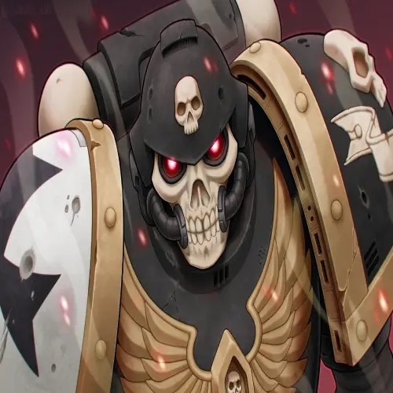

The Black Templars are a Loyalist Second Founding Space Marine Chapter derived from the Imperial Fists' gene-seed and their primarch, Rogal Dorn. Their origin can be traced back to the Imperial Fists' defence of Terra during the Horus Heresy.
Since that time, the Black Templars have been on the longest Imperial Crusade the Imperium of Man has ever known to prove their loyalty to the Emperor of Mankind. They are not a Codex Astartes-compliant Chapter and maintain a very different Chapter structure and culture than is the norm amongst most of the Adeptus Astartes. They are also deeply unusual amongst the forces of the Adeptus Astartes for venerating the Emperor as a literal god, just like the mortal adherents of the Imperial Cult.
